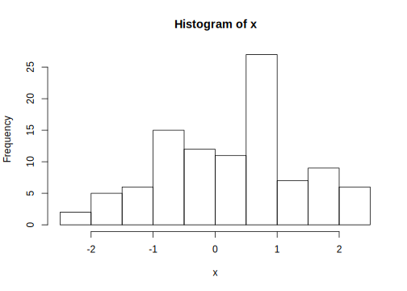

1.2 R 시작 및 작동 체크
실습: 설치된 R을 실행 후 보이는 R 콘솔(consle) 창에서 명령어를 실행하고 결과 확인
그림 Figure 1.1 에서 > 기호는 R의 명령 프롬프트(prompt) 임
- 문자열 출력
[1] "Hello R"
#기호는 주석의 시작을 의미하고 실제로 실행되지 않음 같은 행에서#뒤 내용의 코드 역시 실행되지 않음
a라는 변수에 숫자 9,b라는 변수에 숫자 7를 할당 후 출력
[1] 9[1] 7- 변수
a와b의 사칙연산
[1] 16[1] 2[1] 63[1] 1.285714- R 그래픽 맛보기: 정규분포로부터 난수 100개 생성 후 생성된 데이터에 대한 히스토그램 작성
# 난수 생성 시 값은 매번 달라지기 때문에 seed를 주어 일정값이 생성되도록 고정
# "="과 "<-"는 모두 동일한 기능을 가진 할당 연산자임
#평균이 0이고 분산이 1인 정규분포에서 난수 100개 생성
set.seed(12345) # random seed 지정
x <- rnorm(100) # 난수 생성
hist(x) # 히스토그램

Figure 1.2: 정규분포 100개의 히스토그램
R 명령어 또는 전체 프로그램 소스 실행 시 매우 빈번히 오류가 나타나는데, 이를 해결할 수 있는 가장 좋은 방법은 앞에서 언급한 Google을 이용한 검색 또는 R 설치 시 자체적으로 내장되어 있는 도움말을 참고하는 것이 가장 효율적임.